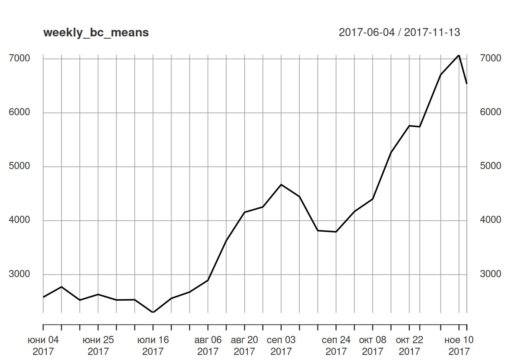
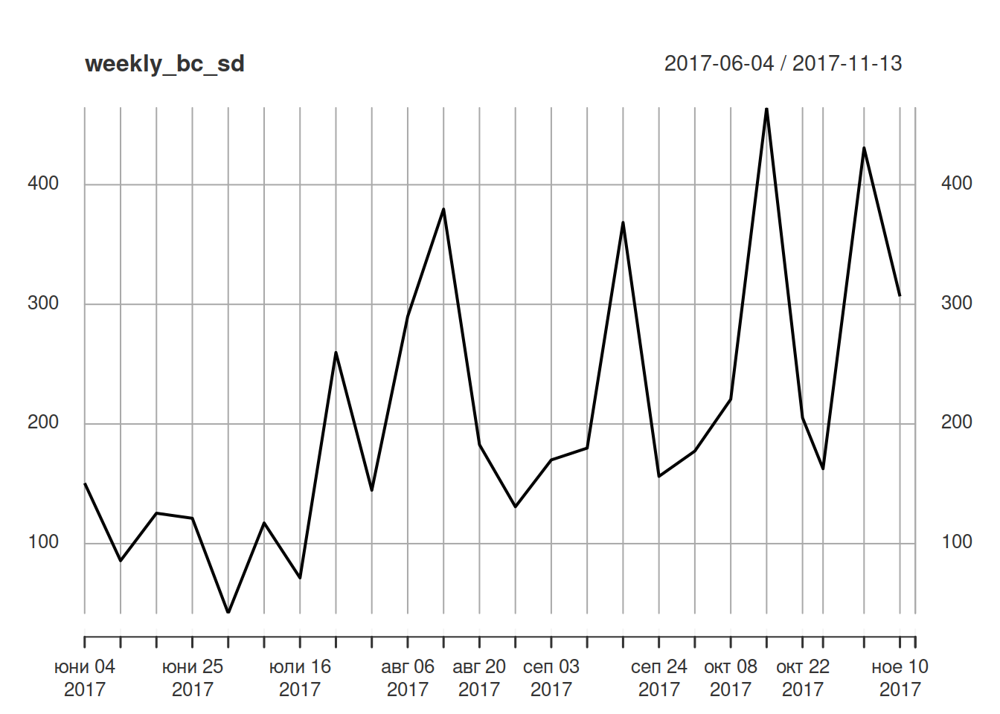
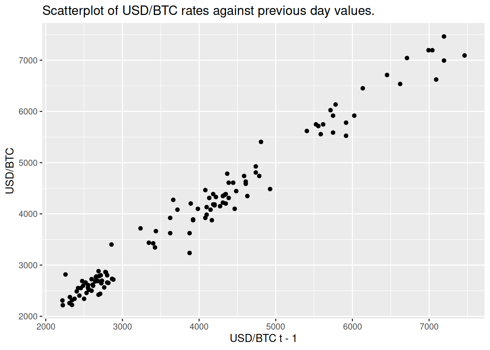

Въведение в анализ на времеви редове
10/12/2021
1 Времеви редове в R
# install.packages(c("xts", "ggplot2"))
library(xts)## Loading required package: zoo##
## Attaching package: 'zoo'## The following objects are masked from 'package:base':
##
## as.Date, as.Date.numericlibrary(ggplot2)
bitcoins <- read.csv(
'https://s3.eu-central-1.amazonaws.com/sf-timeseries/data/bitcoin2017-06-01-2017-11-13.csv',
stringsAsFactors = FALSE
)# extended time series
# В името използвам _ts, за да означа, че това е обект с времеви ред
bc_ts <- xts(bitcoins$close, order.by = as.Date(bitcoins$Index))plot(bc_ts) ## Въпрос: колко е средният обменен курс през юни 2016?
## Въпрос: колко е средният обменен курс през юни 2016?
bc_ts["2017-06"]## [,1]
## 2017-06-01 2475.248
## 2017-06-04 2688.172
## 2017-06-05 2881.844
## 2017-06-06 2717.391
## 2017-06-07 2801.120
## 2017-06-08 2801.120
## 2017-06-11 2659.574
## 2017-06-12 2710.027
## 2017-06-13 2439.024
## 2017-06-14 2403.846
## 2017-06-15 2487.562
## 2017-06-18 2597.403
## 2017-06-19 2724.796
## 2017-06-20 2645.503
## 2017-06-21 2680.965
## 2017-06-22 2688.172
## 2017-06-25 2421.308
## 2017-06-26 2551.021
## 2017-06-27 2557.545
## 2017-06-28 2531.646
## 2017-06-29 2457.002mean(bc_ts["2017-06"])## [1] 2615.2521.1 Въпрос: колко е средният обменен курс през юни 2016?
mean(bc_ts["2017-10"])## [1] 5321.2511.2 Въпрос: колко е средният обменен курс до края на август 2017?
mean(bc_ts["/2017-08"])## [1] 3050.3391.3 Въпрос: колко е средният обменен курс за всяка седмица?
weekly_bc_means <- apply.weekly(bc_ts, mean)
plot(weekly_bc_means)
1.4 Въпрос: колко е стандартното отклонение на обменния курс за всяка седмица?
Стандартното
weekly_bc_sd <- apply.weekly(bc_ts, sd)
plot(weekly_bc_sd) \[ y = (y_{1}, y_{2}, y_{3}, \ldots, y_{T}) \]
\[ y_{t}, t = 1,\ldots,T\\ y_{t - 1}: \text{първи лаг на } y_t \\ y_{t - 2}: \text{втори лаг на } y_t \] В случая с Bitcoin \(T = 117\).
bc_ts_l1 <- lag(bc_ts)
ggplot(data.frame(x = bc_ts_l1, y = bc_ts), aes(x = x, y = y)) +
geom_point() +
ggtitle('Scatterplot of USD/BTC rates against previous day values.') +
ylab('USD/BTC') +
xlab('USD/BTC t - 1')## Warning: Removed 1 rows containing missing values (geom_point).